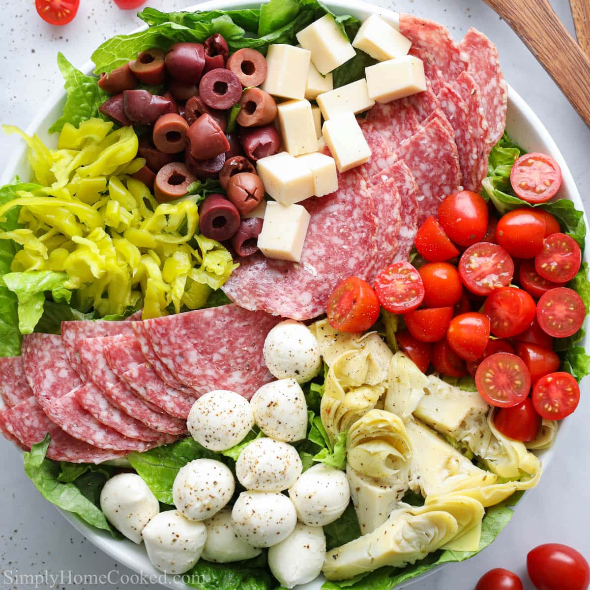

Antipasto

Antipasto is a salad or arguably, a charcuterie, like no other. The combinatio of flavors from tang of
the vinegar fermented vegtables, the savoryness of the italian deli meats and the nutty, sometimes sharp tastes of the italian cheeses is something to behold.
Below is a list of Ingredients and steps regarding how to create this simple dish that is perfect for any occasion
Ingredients
- Hard salami, capicola, prosciutto and soppressata
- Fresh Mozzarella pearls, parmesan, parmigiano reggiano, provolone
- Chopped romaine lettuce, grape/cherry tomatoes, pickled eggplant, green and/or black olives, pepperoncini peppers, red onion (pickled or fresh)
- Olive oil and red vinegar
How to prepare
- Chop your hard salami into blocks (your capicola, prosciutto and soppressata should already be sliced)
- Chop your permesan, parmigiano reggiano and provolone into blocks
- Add your chopped remaine lettuce and olives to a large bowl, cut your cherry/grape tomatoes in half and also add those to the large bowl
- Spread olive oil and red vinegar through the salad a vegatable mixture and toss the salad gently
- add your meats and cheeses